3歳〜
父の影響で、野球を始める
中日ドラゴンズの応援団をしていた父の影響で、3歳から野球を始めました。
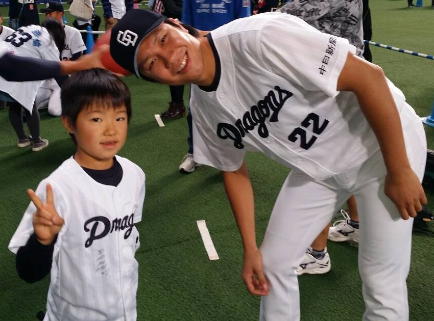
3歳でバットを握ってから大学に入るまで。いまの自分をつくった出来事を、時代ごとに書きました。
中日ドラゴンズの応援団をしていた父の影響で、3歳から野球を始めました。

中学では仲間と過ごす野球を選び、中3で岐阜県選抜に選ばれました。このときの悔しさが、高校で甲子園を目指すきっかけになりました。
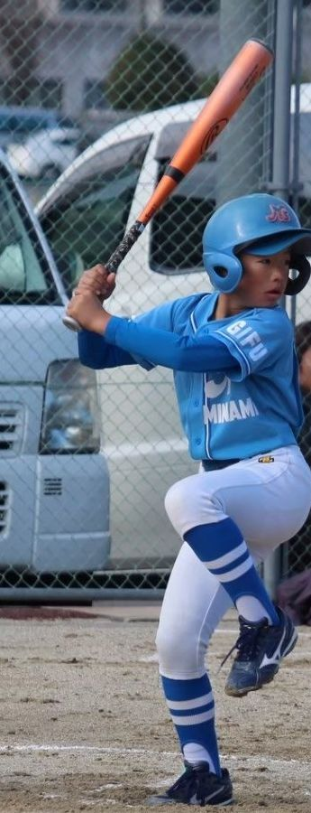

関商工の野球部でレギュラーをつかんだ直後にけがをし、約1年プレーできない時期がありました。そこで監督に相談し、対戦相手を分析するデータアナリストに。最後は大会中の練習メニューを任されるまでになりました。復帰後の最後の夏は、県ベスト4。支えてくれた家族への感謝を強く感じた3年間でした。

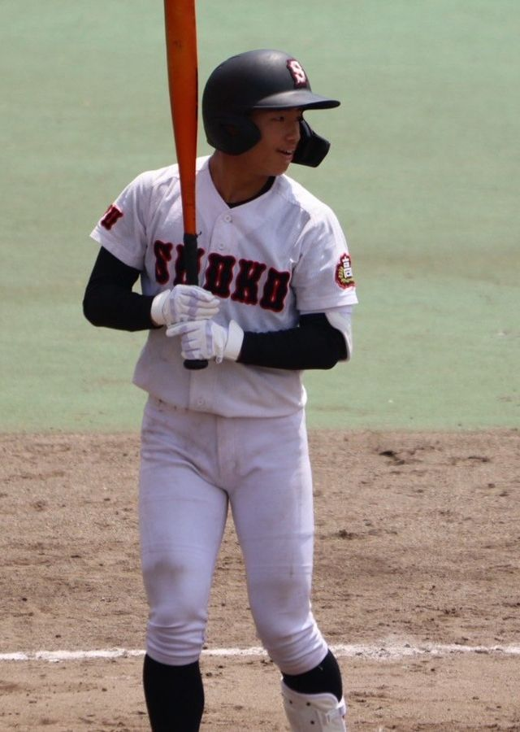
当たり前のことを、どれだけ当たり前にやるかが成功する道。高校の監督の言葉
データ分析の経験から、これからはAIを使える人が必要になると感じ、金沢工業大学の知能情報システム学科へ。ここから先は、下のロードマップに続きます。
これが一番のモットーです。やってみないとわからないことがあると思い、ハッカソン、インターン、学外の講座に飛び込んでいます。ハッカソンでは一度も同じ人と組んだことがありません。人によって考え方や進め方が違うことを知るのが、自分にとっての価値だからです。
これが自分の強みです。0から課題を見つけるより、すでにある課題に解決策を出すのが得意です。スターバックスの接客でも、アプリづくりでも、相手の声を聞いて直すことを一番大事にしています。
言葉にしないと気持ちは伝わらない、と高校で学びました。恥ずかしがり屋なので、まだ親にはちゃんと言えていませんが。
Gnomatic で地方企業の AI・DX が進んでいない現状を目の当たりにしました。AIを持っていても使いこなせない差は、地方ほど大きい。まずは東京の外資系 IT コンサルでいちばん成長できる環境に飛び込み、いろいろな業界の人と関わって知見を積みます。その後は岐阜で起業し、みんなが安心してAIを使える地域をつくりたいと考えています。
青がAIの路線、緑が人間力の路線です。2本が重なる駅は、両方の力を使った活動。今日から先は点線で、これからの予定を描いています。
黒い枠の長い駅は、AIと人間力の乗り換え駅です。
けがでプレーできなかった約1年、対戦相手の分析を担当。データの力と、信頼される力の両方を知った（Story）。
AIを学ぶために、情報理工学部 知能情報システム学科へ。
6人チームで「文章を書く時間帯で内容は変わるか」を形態素解析で検証。最終発表会でチームが選ばれた。
学長褒賞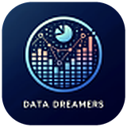
夢考房 Data Dreamers に参加機械学習コンペに挑戦。毎週月曜に進捗を発表し、先輩から助言をもらって改善を続けている。
大規模言語モデル、フィジカルAI、深層学習、GCIベーシックの4講座を受講。
お客様一人ひとりが満足して帰れる接客を意識。対話から満足をつくる姿勢は、アプリづくりでも一番大事にしている。
初めてのハッカソン。アイデア出しの難しさと、チームで形にする面白さを知った。
AIプログラミング入門、AI応用Ⅱ（自然言語処理）、情報ネットワーク基礎、ビジネス思考法入門。数理リテラシー特別講座も2つ修了。
6人チームのPMとして、地域の困りごとと大学生をつなぐ「Fitt0」を企画。良いものを作るだけでなく、お金になる形にして初めて価値が届くと学んだ。紹介動画
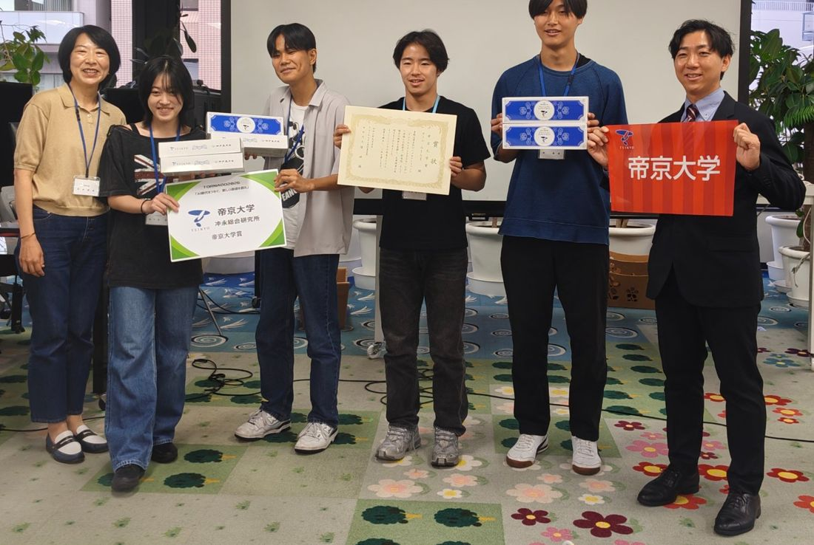

教育補助員を含めた学び合いを進め、学力向上に貢献したことで推薦をいただいた。
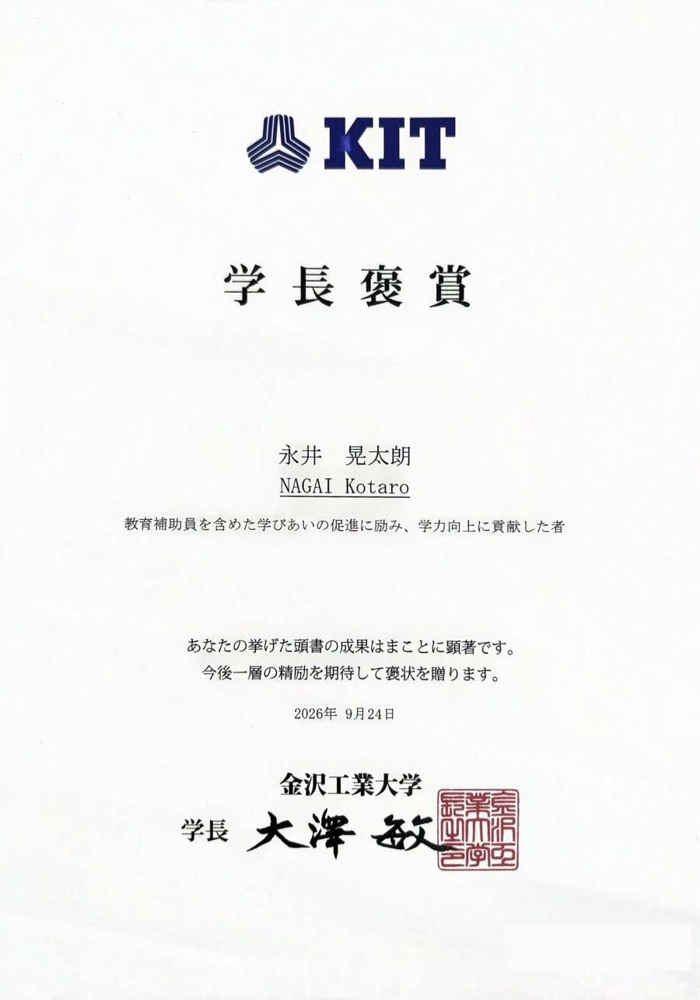
上位4%。LightGBM を中心に、特徴量とパラメータの調整を重ねた。
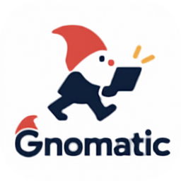
Gnomatic で石川県の AI・DX 推進学部4年の先輩たちと、企業との面談で課題を聞き、IT で価値を返す活動を始めた。都市ではない地域ほど AI・DX が遅れていると感じた。
母校の野球部と連携し、測定会のデータを見える化するアプリを開発中。研究テーマは「高校野球選手の冬季トレーニングと体組成」。
旅行の行き先を地図から選べる Web アプリ「旅行どこいこう」を開発。
寝る間もなく足が限界になる中、仲間と助け合って歩き切った。
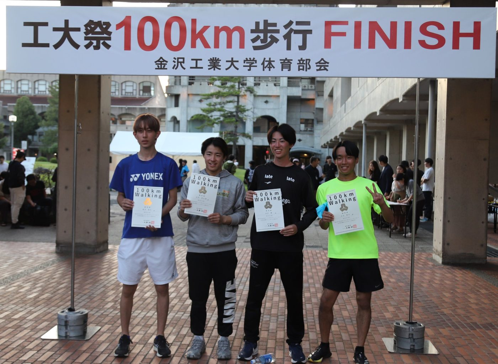
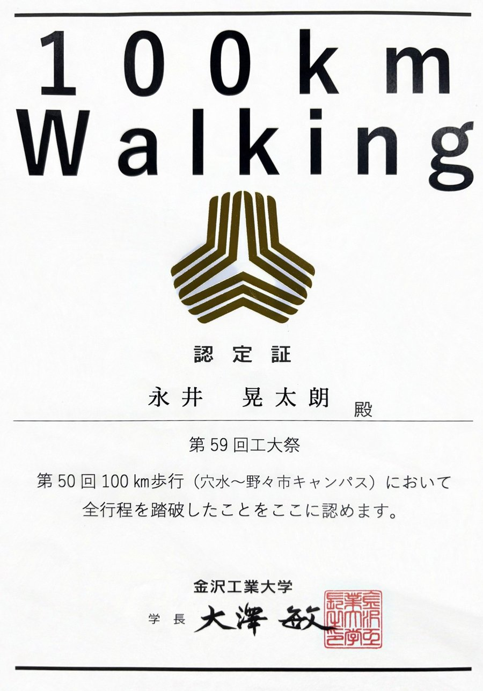
2027年9月の北陸ITカンファレンスに向けて、スポンサーチームとして企業との面談を重ねた。
Kaggle Grandmaster・Master の指導のもと、メダル獲得を目指す半年間のプログラム。
Google Cloud と Gemini を使ったプロダクト開発に挑戦中。
学生ステーションのシフト管理アプリを iOS 化。自分と先輩のスマホにビルドし、実際の業務で使い始めた。次の目標は App Store での公開。
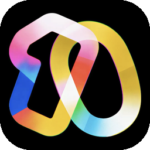
東京の技術カンファレンス 1回目ABEMA Developer Conference に参加。2年生になるまでに2回参加し、学んだ技術が社会でどう使われているかを知る。
12月中に公開。スタッフ用の画面に加えて、シフトを組む人のための管理者画面もそろえる。
実際に使ってもらい、あったらいい機能や直してほしい点を聞いて改善する。3月に仕上げ、4月からの本番に備える。
話す英語を身につけ、TOEIC で今の実力を数字で知る。東京の技術カンファレンス2回目にも参加する。
LAIME Kaggle Dojo のメンターの力を借りて、コンペを広く浅くではなく一つに集中する。1年生のうちに初メダル。
2年生のスタートと同時に、学生ステーションのスタッフ約50人が毎日使うシフト管理の仕組みにする。
2年生の夏、企業の現場で働く。Data Dreamers の創設者の先輩が、NEC のコーオプ教育で多くを学んだ話がきっかけ。
Developers Hub の一員として、学生・エンジニア・企業がつながる場をつくる。
一つのコンペに集中する進め方を続け、銀メダルを2枚取る。
100人以上が所属する学内最大のプロジェクトで、成果を出し、人を引っ張る。
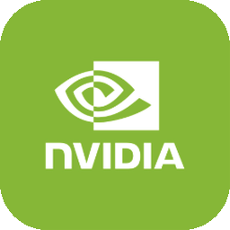
海外の技術カンファレンスと IT コンサルのインターンAWS、Google、NVIDIA などの海外カンファレンスに一度は参加する。アクセンチュアなど、IT コンサルの夏のインターンに挑戦する。
3年生で金メダルを取り、Kaggle の最高位 Grandmaster を目指す。
選手一人ひとりに合ったトレーニングを提案できる分析手法を確立する。
結果を正当に評価してもらえる、いちばん成長できる環境で、企業の課題をデータで整理し、対話しながら解決策を提案する。
終点：岐阜で起業し、AI格差をなくすAIを使える人と使えない人の差は、地方ほど大きい。東京で鍛えた知見を持ち帰り、コンサルタントとして、みんなが安心してAIを使える岐阜をつくる。
ロードマップの中から、特に力を入れた取り組みです。
学生スタッフとして働く中で、シフトの確認と調整に手間がかかっていることに気づき、自分でアプリを作りました。最初は Web アプリとして作り、いまは iOS アプリにして、自分と先輩のスマホで実際の業務に使っています。
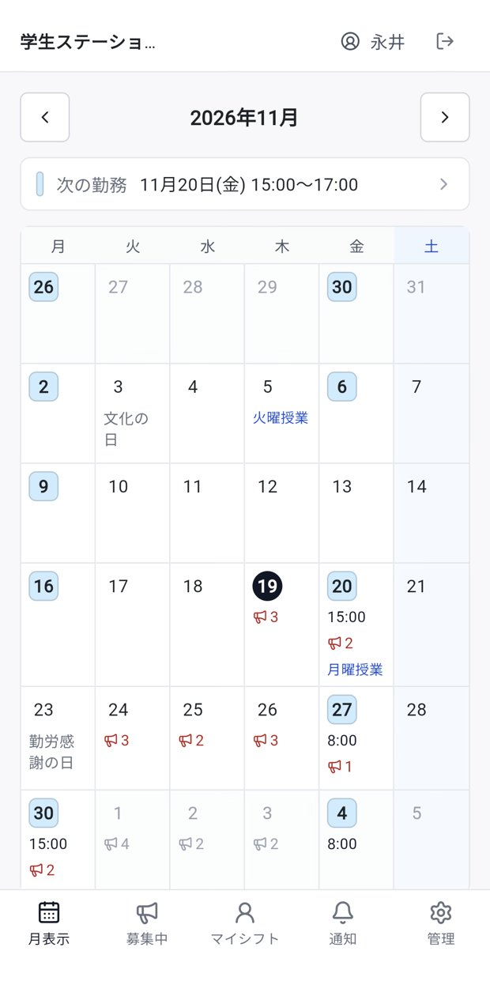
地域住民の小さな困りごとと、助けたい大学生をつなぐマッチングサービス。AI が依頼内容を整理し、活動の実績を言葉にして残す。
測定会でデータを取っても見える化できなかった、自分が選手だったころの課題を、アプリと研究で解こうとしている。
朝・夜・深夜に書いた感想文を形態素解析し、言葉の傾向を比べた6人チームの研究。
金沢工業大学のオナーズプログラムで参加した、授業の外の講座、講演会、インターンシップ、課外プロジェクト、カンファレンスです。参加して感じたことを、講座ごとに一言で残していきます。
Google DeepMind Developer Experience Team Juyeong Ji 氏
最先端のAIも、地道な研究と開発者の工夫の積み重ねでできていると知り、技術を身近に感じた。学んだ考え方を開発に生かし、AIを使いこなせる技術者を目指したい。
横谷哲也 教授
水落隆司 氏（三菱電機 シニアフェロー）
1年生のうちから動いている人ほど選択肢が広がると知り、早く動く大切さを感じた。この講座をきっかけに、長期インターンへの応募を始めた。
授業以外の活動や人とのつながりが、先輩たちのキャリアにつながっていると知った。課外活動やハッカソンを、将来につながる経験として意識して取り組みたい。
大学で身につけた考え方が、仕事でも生きていると知った。目標とする働き方から逆算して、今やるべきことを考えていきたい。
内定を得た先輩から、自己分析や企業研究の進め方、面接で意識したことを聞いた。
若手の卒業生15名と対面で話す座談会
これからは、学生のためになるイベントを開いたり、自分の成長につながる時間にしたりしていきたい。
「地震の被害を減らす家具の配置」をテーマにグループディスカッションをした。一人ひとりが役割を持って取り組んでいて勉強になった。
KITの卒業生が集まってつくった5〜6人のベンチャー企業。実際に作ったアプリの話や、これからのIT業界、就活の話を聞けた。今後に生かしたい。
100人以上が所属する学内最大のプロジェクト。機械学習コンペに取り組み、毎週の進捗発表で先輩からフィードバックをもらっている。
2027年9月の北陸ITカンファレンスに向けて、スポンサーチームとして協賛をお願いする企業との面談を重ねた。
毎週、CTF の問題に取り組んでセキュリティの基礎を学んでいる。
上位チームの解法を直接聞き、学ぶために参加した。
活動の中で感じたことを、そのときの言葉で残しています。
企業の方から「最先端の開発では、話して伝える力が一番必要」と聞いた。英語を、読む・書くだけでなく話せるようになりたい。PDの英語クラスで、英語の楽しさも感じている。
一次面接ではこれまでの活動を評価してもらえる。でも技術面接では、まだ力が足りない。方向は間違っていないから、早く技術を身につけたい。
Gnomatic で企業の話を聞いて、都市ではない地域ほど AI・DX が遅れていると感じた。いつか岐阜に持ち帰りたい。
100km歩行。足が限界でも、仲間と一緒だったから歩き切れた。
Tornado の審査員に「どうしたらお金になるか」を問われた。どれだけ良いものを作っても、届かなければ意味がない。